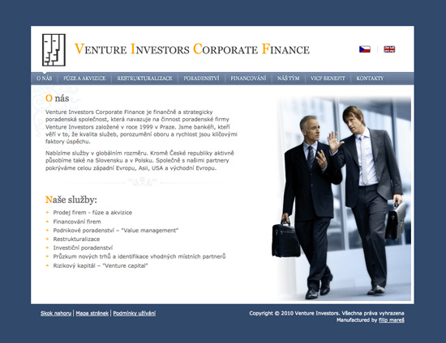

Venture Investors Corporate Finance
web design / front-end development / 2009

Venture Investors Corporate Finance - Investment banking services
Goal of the project
The client wanted a new design and identity for an existing site that was professional and conservative as well as engaging, which could highlight the fact that this is the premiere Investment banking company.
Description of the solution
The challenge for this project was to create a design, which was both elegant and visually engaging, but at the same time simple and intuitive to use. Working only from a supplied logo, all the structure and the copy were revised, based on SEO analysis, to better introduce the company and offered services to a relevant audience.
My work on this project
While working as a freelancer, I was responsible for creating a new design for this site from the ground up, as well as all production work to bring the new design to life. I also served as a technical consultant, recommending different ways in which the site's information could be displayed. The site was done in solid HTML, JavaScript and CSS.